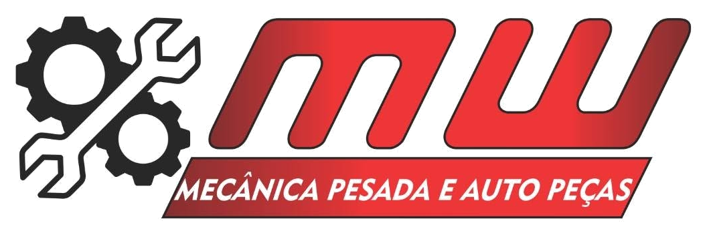
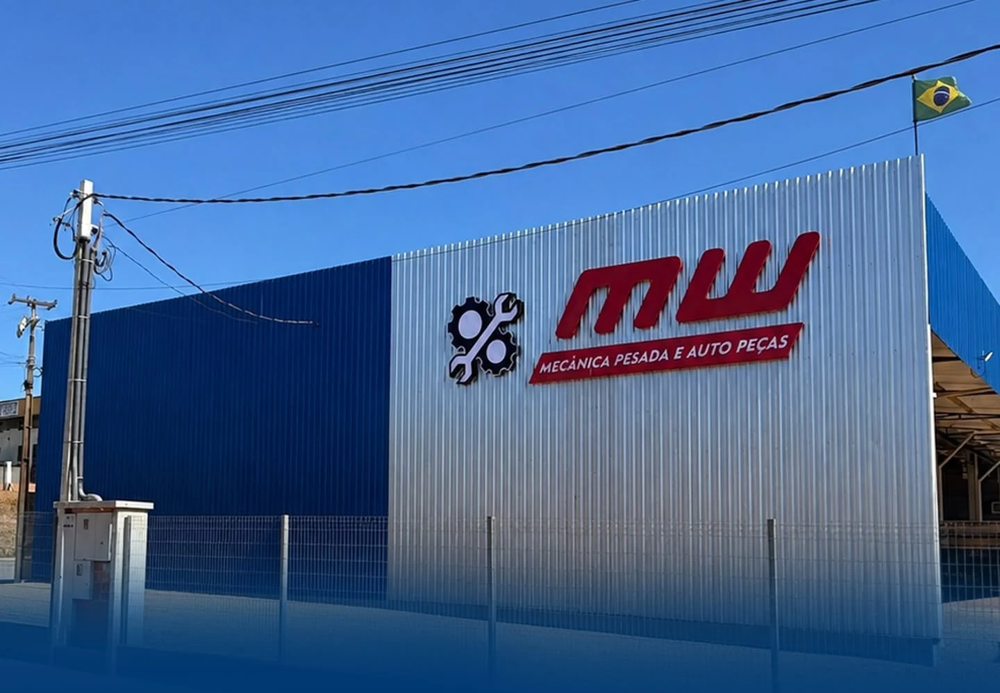

Fechamento financeiro no ritmo da gestão
O objetivo é ter DRE gerencial e fluxo de caixa confiáveis, com uma cadência que permita acompanhar o negócio sem esperar meses pelo fechamento.
Contexto informado
Material preparado pela Lean Company a partir da conversa inicial com Maicon. O diagnóstico será aprofundado na imersão presencial.
A MW reúne diferentes frentes de receita e mais de um CNPJ. O próximo passo é fazer a informação financeira, os processos, os indicadores e a equipe crescerem com a mesma consistência da operação.


Informação confiável para gerir hoje. Processos e lideranças preparados para crescer amanhã.
São os pontos relatados pela MW e que orientam esta primeira versão. A visita presencial serve para validar causas, sistemas, rotinas e prioridades antes de aprofundar o trabalho.
O objetivo é ter DRE gerencial e fluxo de caixa confiáveis, com uma cadência que permita acompanhar o negócio sem esperar meses pelo fechamento.
Contexto informadoMais importante que recontar é garantir que entrada, saída e movimentação física estejam refletidas corretamente no sistema.
Contexto informadoTreinar a equipe para executar as rotinas, conferir os dados e sustentar a qualidade das informações ao longo do mês.
Objetivo declaradoDesenvolver lideranças e construir metas por equipe para transformar acompanhamento em rotina, e não em cobrança pontual.
Objetivo declaradoÉ a mesma lógica para a DRE, o fluxo de caixa e o estoque: a Lean trabalha primeiro na origem da informação, depois automatiza a leitura e, por fim, transforma os indicadores em rotina de gestão.
O escopo é recorrente e evolui conforme a imersão. As frentes abaixo representam o núcleo do trabalho já alinhado com a MW.
Construir uma leitura gerencial confiável para acompanhar caixa, resultado e rentabilidade das diferentes frentes da MW.
Atacar a causa das divergências antes de transformar a contagem em mais um retrabalho.
Tirar a gestão da dependência de relatórios manuais e aproximar a informação do momento em que ela é necessária.
Fazer a gestão permanecer na empresa por meio de pessoas que entendem o processo, os números e o que precisam acompanhar.
A sequência foi apresentada na conversa inicial e atravessa todas as frentes do trabalho.
Conferir a origem da informação e mapear como ela nasce, circula e chega ao sistema.
Automatizar o que for possível e conectar os indicadores à realidade da MW, não a um modelo pronto.
Usar os números para identificar prioridades e implantar ações que aumentem eficiência e rentabilidade.
Contexto informado na conversa inicial · causas e extensão serão validadas na imersão.
Direção de trabalho proposta · o desenho final depende da validação dos dados e processos da MW.
Sem cronograma artificial: as frentes avançam conforme a qualidade dos dados e a prioridade identificada na operação.
Entender sistemas, CNPJs, rotinas financeiras, estoque, responsáveis e qualidade dos dados.
Colocar de pé DRE, fluxo de caixa, rotinas de estoque, integrações e controles que sustentem a informação.
Aprofundar análises, desenvolver líderes e transformar indicadores em rotina de melhoria.
O exemplo abaixo demonstra uma das formas como a Lean transforma bases operacionais em leitura gerencial. O projeto da MW será construído a partir dos dados e prioridades reais da empresa.
A diferença está na intensidade do acompanhamento. Os dois formatos incluem as despesas das visitas presenciais.
Atuação presencial em blocos de dois dias, com cadência aproximadamente quinzenal. Um ritmo suficiente para conhecer a operação, implantar a base e mostrar velocidade de entrega.
Mantém os quatro dias presenciais e adiciona dois dias remotos dedicados para acelerar análises, estruturação e acompanhamento entre as visitas.
A carga de atuação pode ser ampliada ou revista conforme a necessidade percebida pela MW e pela Lean ao longo do trabalho.
Nosso papel é construir a base para que números, processos e pessoas deem à empresa mais velocidade de análise, mais confiabilidade e mais capacidade de capturar resultado nas diferentes frentes da operação.